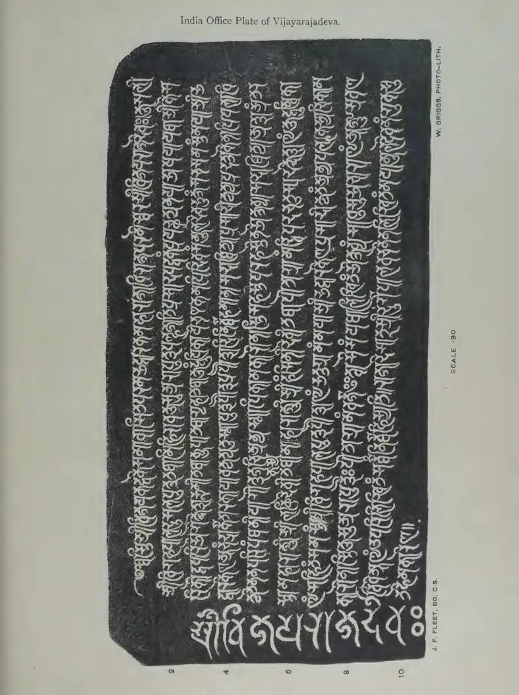

Nâgpur Museum inscription of Sômêśvara ; Śaka-Saṁvat 1130
No. 45.—NAGPUR MUSEUM INSCRIPTION OF SOMESVARA;
SAKA-SAMVAT 1130.
BY H. KRISHNA SASTRI; BANGALORE.
The slab which bears the subjoined inscription, is preserved in the Museum at Nâgpur. I edit this record from three sets of excellent inked estampages, one of which was supplied to
1 Read varjayittâ śesham.
2 Read rânâm=; instead of the Genitive one would have expected the Instrumental case here and in the next word.
3 Read -vidhêyânâm=, for -vidhêyair=.
4 For nirvakshyatê.
5 Read -âdêsâch=chhrî.
6 Intended for dêvêna Maṅguka-sutêna.
7 This is engraved in large letters on the proper right margin.
8 Or, it may be, 'dwelling at the glorious (town) of victory Kaṭaka'; see page 313 above, note 3.
9 I am somewhat doubtful about this, but see no way of translating the original text differently. It is strange that the name of the village, to which the land belonged, should have been omitted.
10 The original has balâdhikṛita.
Plate 1 is bound after this page.
Dr. Hultzsch by Mr. Cousens, and two by Dr. Fleet, for whom they had been prepared by Shaikh Karîm. Each set of impressions consists of five pieces. The context suggested to me that the first and second pieces should form the front, and the third and fourth pieces the back, of a slab which is broken in the middle, and that the fifth piece is probably engraved on one of the sides of the same slab. To settle this point, Dr. Hultzsch forwarded one set of the impressions to Mr. R. S. Joshi, Curator of the Central Museum, Nâgpur, who readily supplied the following information. The first and second, third and fourth pieces are actually engraved on the front and back, respectively, of a slab which is broken across the middle. The fifth piece is on the right-hand side of the upper half of the slab, and the lower half contains four lines in continuation, of which Mr. Joshi kindly sent a pencil-rubbing and an impression. He added that “the stone was brought to the Museum in the year 1861 from Sironcha, about 160 miles from Nâgpur, by Colonel Glasfurd, the then Deputy Commissioner of the then Upper Gôdâvarî district, who found the same serving the purpose of a tombstone and mounted at the head of an innumerable number of curious sarcophagi at the base of a range of hills in the insignificant village of Kowtah, some 6 miles from Sironcha tahsîl.” Sironcha is situated on the left bank of the Gôdâvarî, in about 19° latitude and 80° longitude. The slab itself is noticed as “said to have come from Sironcha” in Sir A. Cunningham’s Reports, Vol. VII. p. 115.
At the top of the front of the slab are drawn some rude figures: a dagger between a tiger facing it from the left and a linga on the right. Below the tiger is the sun, and below the linga a crescent, with a doubtful figure (a bowl?) between the two.
The alphabet of the inscription is Telugu, and its language Telugu prose. The characters on the front and back of the slab are much larger than those on its right side. A few letters at the beginning of lines 38 to 40 and at the end of line 56 are lost altogether; a number of other letters are indistinct and doubtful, especially on the right side of the slab and about the end of the inscription on the back. I am unable to give a complete transcript and translation of the damaged portions of the inscription. Of orthographical peculiarities I need only note that the vowel ri is represented by ri in prakatîkrita (l. 6 f.) and Śakanripa (l. 26).
Lines 18 to 35 of the inscription record that Gaṅgamahâdêvi, the chief queen of Sômêsvaradêva, gave a village, named Kêramarûka (l. 35) or Kêramarka (l. 55), to two temples of Śiva, both of which she had built. The first was called Vira-Sômêsvara after her husband, and the other Gaṅgâdharêsvara after herself. The date of the consecration of the two temples and of the grant of the village was Sunday, the twelfth tithi of the bright fortnight of Phâlguna in the Śaka year 1130. The next few lines (35 to 42) appear to contain the king's sanction of the grant. Lines 42 to 55 specify the names of a number of royal officers who were witnesses of the transaction. Lines 57 to 79 I have not been able to make out satisfactorily. They appear to record that both Gaṅgamahâdêvi and Sômêsvaradêva performed libations of water; but it is not clear if they did this in connection with the same grant that was referred to before, or with some additional donations.
I have no means for identifying the village of Kêramarûka which was the object of the grant. The date of the grant has been kindly calculated by Mr. Dikshit, who remarks on it as follows:—“In Śaka-Samvat 1129 expired, Phâlguna šukla 12 ended on Saturday, the 1st March, A.D. 1208, at 13 gh. 59 palas. This tithi can in no way be connected with the following Sunday, and therefore this is not the given date. In Śaka-Samvat 1130 expired, Phâlguna šukla 12 ended on Wednesday, the 18th February, A.D. 1209. This also is not the given date. In Śaka-Samvat 1131 expired, Phâlguna šukla 12 ended on Sunday at 18 gh. 43 palas. The European equivalent is the 7th February, A.D. 1210.”
The first sixteen lines of the inscription are made up of a string of birudas of the king, whose full name was Jagadêkabhûshaṇa-Mahârâja, alias Sômêsvaradêva-Chakravartin.
1 ओं3 स्वस्ति [॥*] सहस्रफणा-
2 मणिकिरणनिकराव-
3 भासुरनागवंशोद्भ-
4 व भोगावतीपुरवराधी-
5 श्वर सवत्सव्याप्नलां-
6 च्छन काश्यपगोत्र प्रक-
7 4टीक्रितविजयघोष-
8 ण विश्वविश्वंभरापर-
14 [णि]क्यदेवोदिव्यश्री-
15 पादपद्माराधक प-
16 रबलसाधक श्रीम-
17 ज्जगदेकभूषणम-
18 हाराजुलैन श्रीसो-
19 मेश्वरदेवचक्रवर्तुल-
20 कग्रमहिषियैन गं-
21 गमहादेवुलु तम
| 9 मेश्वर परमभट्टारक | 22 पुरुषुनि पेर वीर- |
| 10 महामहेश्वरचरण- | 23 सोमेश्वरमुं दम |
| 11 कंजकिंज[ल्क]पुंजपिं-5 | 24 पेर गंगाधरेश्वरमुं7 |
| 12 जरितभ्रमरायमा- | 25 ब्रतिष्ठ सेसेडि नां- |
| 13 न6 [मा]नो[न्न]त [श्रीमा]- | 26 टिकि 8शकद्रिपकाला- |
B.—Back of Slab.
| 27 तीतसंवत्सरमु- | 29 टि फालुण्श[क्र]-10 |
| 28 लु ११३० अगुनं-9 | 30 द्वादशिनि आदित्यवा- |
He claims to be a descendant of the race of the Nāga with thousand hoods, i.e. of the serpent Šesha, to be the lord of the city of Bhôgāvatī, to have for his crest a tiger with a calf, to belong to the Kāśyapa gôtra, and to be a worshipper of the god Mahéśvara and of the goddess Mānikyadēvī. In his Dynasties of the Kanarese Districts (p. 95 ff.) and in this Journal (p. 230 ff.), Dr. Fleet has given details of two branches of the Sinda family, which were established at Bāgađage and at Erambarage, and which were tributary to the Western Chálukya and Kalachuri dynasties.1 In the Bhairanmaṭti inscription (No. 33 above), the members of the Bāgađage branch of the Sinda family are stated to be descendants of the race of serpents (Nāgavaṁśa), to use the crest of a tiger, and to be the lords of the city of Bhôgāvatī. As three similar birudas are applied to Sôméśvara, during whose reign the subjoined inscription is dated, it is clear that he must have been connected with the Sinda family. But as the inscription does not mention any of his ancestors, it is vain to conjecture whether he was a direct descendant of the Bāgađage branch, or of Vikrama, the last representative of the Erambarage branch who is noticed by Dr. Fleet, and whose latest inscription is dated in the Śaka year 1102, twenty-eight years before the subjoined inscription.
TEXT.2
A.—Front of Slab.
1 Compare also the Tidgundi plates, published by Professor Kielhörn, above, p. 306 ff.
2 From inked estampages, received from Mr. Cousens, Dr. Fleet, and Mr. Joshi.
3 Expressed by a symbol.
4 Read प्रफटीकृत.
5 The anusvāra stands at the beginning of the next line.
6 Read 'रायमाण.
7 The anusvāra stands at the beginning of the next line.
8 Read शकनृप.
9 The anusvāra stands at the beginning of the next line.
10 Read फाल्गुनश्क.
1 The anusvára stands at the beginning of the next line.
44 डलीक[सो]मराजुन
45 श्रीकरणमु. दामोद-
46 रनायकुलूनु में-2
47 टमनायकुंडु-
48 नु चांचनपेगडानु3
49 [प]डिहारि4 सोमिना-
50 यकुंडूनु गुद्दा-
51 [पु] एऽऽपरडि[नि]5
52 विलुचूडुप्रबु-6
53 वु पाऽऽकोट को-
54 [म्मनायकुंडुनु]
55 साचि [॥*] केर[मऽ] सं-
56 क[मु] देवर . .
31 रसु नांडु ई
32 रेंडु शिवालयमु-
33 • ल[कुं] बृजात्यमु-
34 गानिच्चिन ऊरु के-
35 [रम]ॐकानु [*] मा सुं-1
36 कमुलों बोतुम-
37 [ल]व रेंडु वीसालुनु
38 • [ा]सेमु मडिनि पा-
39 • [भो]गमुवारिकि ज-
40 • • गामानु धार[ा*]-
41 [पू*][ब्वं]कमुगानिच्चि- •
42 [नांसु] [॥*] ईयर्थ्यान-
43 कु मा [प्र]धा[नि] मं-
of Slab.
C.—Side
69 श्वर-
70 देव-
71 डु9 [पो]-
72 [रि]पे.
73 कि कु-
74 केऽऽ [धा*]-
75 र वो-
76 [से].
77 दु [ब्रा]-
78 ह्यण-
79 व्रिति10 [॥*]
57 श्रीगंग-
58 मह[ा]-
59 [दि]वि सो-
60 मना-
61 [थ]सो-
62 मय[ा]-
63 दुल[कु]8
64 कू[ड]-
65 ॐंडु
66 धार
67 [वो]से [॥*]
68 सो[मे]-
7 The anusvára stands at the beginning of the next line.
2 The anusvára stands at the beginning of the next line.
4 i.e. प्रतिहार.
6 Read प्रभुव.
8 Read जुलक.
5 Read देडिन्नि.
9 Read देवुड.
3 Read पेग्गडानु.
10 Read ढचि.
TRANSLATION.
Ôm. Hail !Gangamahâdêvi,— the chief queen of the glorious Jagadêkabhûshana-Mahârâja, alias the glorious Sômêsvaradêva-Chakravartin, who was born of the race of the Nâga (i.e. the serpent Śêsha) who is resplendent with the mass of rays (proceeding from) the jewels on (his) thousand hoods; who is the lord of Bhôgâvati, the best of cities; whose crest is a tiger together with a calf; who belongs to the Kâśyapa gôtra; whose shout of victory is universally known; who is the supreme ruler of the whole earth; who is a supreme lord; who resembles a bee which is rendered yellow by the mass of the pollen of the lotus-feet of the great Mahêsvara; who is full of pride; who is a worshipper of the heavenly and holy lotus-feet of the blessed Mânikyadêvi; (and) who is a conqueror of hostile armies,— on the day on which (she) had performed the consecration (of the image) of Vira-Sômêsvara, (which was called) after the name of her husband, and (of the image) of Gangâdharêsvara, (which was called) after her own name, (viz.) on Sunday, the twelfth tithi of the bright (fortnight) of Phâlguna in (the year) 1130 of the years expired from the time of the Śaka king,— gave, for worship in these two temples of Śiva, the village of Kêramaruka. We1 gave, with libations of water, in (this village), two sixteenths . . . . of our revenue (suñka) . . . .
(Line 42.) To this transaction, our minister Maṇdalîka-Sômarâja, the secretaries Dâmôdara-Nâyaka, Meṇtama-Nâyaka and Châñchana-Peggada, the door-keepers Sômi-Nâyaka, Guddâpu-Eṛapa-Redđi, Viluchûđla-Prabhu and Pârakôṭa-Komma-Nâyaka (were) eye-witnesses.
(L. 55.) The revenue of Kêramarka . . . .
(L. 57.) The glorious Gangamahâdêvi performed a libation of water (into the hands) of Sômanâtha-Sômayâjin . . . .
(L. 68.) Sômêsvaradêva performed a libation of water . . . . for the support of Brâhmanas.
1 This pronoun apparently refers to the king.
